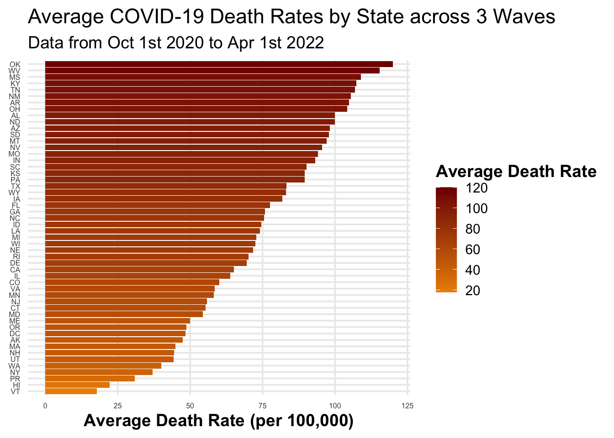

── Attaching core tidyverse packages ──────────────────────── tidyverse 2.0.0 ──
✔ dplyr 1.1.4 ✔ readr 2.1.5
✔ forcats 1.0.0 ✔ stringr 1.5.1
✔ ggplot2 3.5.1 ✔ tibble 3.2.1
✔ lubridate 1.9.3 ✔ tidyr 1.3.1
✔ purrr 1.0.2
── Conflicts ────────────────────────────────────────── tidyverse_conflicts() ──
✖ dplyr::filter() masks stats::filter()
✖ dplyr::lag() masks stats::lag()
ℹ Use the conflicted package (<http://conflicted.r-lib.org/>) to force all conflicts to become errors
require(dplyr)require(lubridate)
Load data
load('../data/dat.rda')
Analyses
Pandemic period from Jan 2020 to Nov 2024
The figure below displays the COVID-19 cases, deaths, and hospitalization rate per 100,000 people in each region of the US from 2020 to 2024.
# Define custom labels for the facetsdat.labs <-c("cases"="COVID-19 Cases", "deaths"="Deaths", "hosp"="Hospitalizations")# Apply to the ggplot codedat %>%pivot_longer(cols =c("cases", "deaths", "hosp"), names_to ="outcome", values_to ="count") %>%mutate(rate = count *100000/ population) %>%ggplot(aes(x = date, y = rate, group = state, color = region_name)) +geom_line(linewidth =1) +# Thicker lines for better visibilityfacet_wrap(~outcome, ncol =1, scales ="free", labeller =labeller(outcome =as_labeller(dat.labs))) +scale_x_date(breaks ="3 months", # Show a date label every 6 monthsdate_labels ="%b %Y"# Format the labels as "Month Year" (e.g., Jan 2021) ) +theme_minimal(base_size =14) +# Use a cleaner theme with larger base fonttheme(strip.text =element_text(face ="bold", size =14), # Bold facet labelslegend.position ="bottom", # Move legend to bottom for better space usagelegend.title =element_text(face ="bold"), # Bold legend titleaxis.title =element_text(face ="bold"), # Bold axis titlesaxis.text.y =element_text(size =10), # Slightly larger axis text for readabilityaxis.text.x =element_text(size =8, angle =10),panel.grid.minor =element_blank() # Remove minor grid lines for a cleaner look ) +labs(x ="Date",y ="Rate (per 100,000 people)",color ="Region",title ="Rates of Cases, Deaths, and Hospitalizations Over Time (State Level)",subtitle ="Data displayed per 100,000 people by region" )
Warning: Removed 1612 rows containing missing values or values outside the scale range
(`geom_line()`).
As can be seen from the trend plot which depicts the rates of COVID-19 cases, deaths, and hospitalizations from 01/25/2021 to 11/30/2024, there seems to be 3 waves of COVID-19 spread. The first one occurs from Oct 2020 to Apr 2021, where a peak in cases, deaths, and hospitalizations can be observed. Likewise, it appears that there was another wave between Jul 2021 to early Dec 2021. Lastly, there was a wave from early Dec 2021 to Apr 2022.
Deaths rate by state during each time period
dat %>%filter(date >=make_date(2020, 10, 1), date <=make_date(2021, 4, 1)) %>%group_by(state) %>%summarise(cum_death =sum(deaths, na.rm =TRUE),population =mean(population, na.rm =TRUE),death_rate = cum_death *100000/ population ) %>%ggplot(aes(x =reorder(state, death_rate), y = death_rate, fill = death_rate)) +# Add `fill` aestheticgeom_col() +scale_fill_gradient(low ="#FFA5A5", high ="#AA0000") +# Define gradient colorscoord_flip() +theme_minimal(base_size =14) +# Minimal theme for better readabilitytheme(axis.title.y =element_blank(), # Remove y-axis title for a cleaner lookaxis.title.x =element_text(face ="bold"), # Bold x-axis titleaxis.text =element_text(size =8), # Slightly larger axis textlegend.title =element_text(face ="bold"), # Bold legend titlepanel.grid.minor =element_blank(),legend.position ="right"# Position legend to the right ) +labs(y ="Death Rate (per 100,000)",fill ="Death Rate",title ="Cumulative COVID-19 Death Rates by State",subtitle ="Data from Oct 1st 2020 to Apr 1st 2021" )

dat %>%filter(date >=make_date(2021, 7, 1), date <=make_date(2021, 12, 1)) %>%group_by(state) %>%summarise(cum_death =sum(deaths, na.rm =TRUE),population =mean(population, na.rm =TRUE),death_rate = cum_death *100000/ population ) %>%ggplot(aes(x =reorder(state, death_rate), y = death_rate, fill = death_rate)) +# Add `fill` aestheticgeom_col() +scale_fill_gradient(low ="#FFA5A5", high ="#AA0000") +# Define gradient colorscoord_flip() +theme_minimal(base_size =14) +# Minimal theme for better readabilitytheme(axis.title.y =element_blank(), # Remove y-axis title for a cleaner lookaxis.title.x =element_text(face ="bold"), # Bold x-axis titleaxis.text =element_text(size =8), # Slightly larger axis textlegend.title =element_text(face ="bold"), # Bold legend titlepanel.grid.minor =element_blank(),legend.position ="right"# Position legend to the right ) +labs(y ="Death Rate (per 100,000)",fill ="Death Rate",title ="Cumulative COVID-19 Death Rates by State",subtitle ="Data from Jul 1st 2021 to Dec 1st 2021" )
dat %>%filter(date >=make_date(2021, 12, 2), date <=make_date(2022, 4, 1)) %>%group_by(state) %>%summarise(cum_death =sum(deaths, na.rm =TRUE),population =mean(population, na.rm =TRUE),death_rate = cum_death *100000/ population ) %>%ggplot(aes(x =reorder(state, death_rate), y = death_rate, fill = death_rate)) +# Add `fill` aestheticgeom_col() +scale_fill_gradient(low ="#FFA5A5", high ="#AA0000") +# Define gradient colorscoord_flip() +theme_minimal(base_size =14) +# Minimal theme for better readabilitytheme(axis.title.y =element_blank(), # Remove y-axis title for a cleaner lookaxis.title.x =element_text(face ="bold"), # Bold x-axis titleaxis.text =element_text(size =8), # Slightly larger axis textlegend.title =element_text(face ="bold"), # Bold legend titlepanel.grid.minor =element_blank(),legend.position ="right"# Position legend to the right ) +labs(y ="Death Rate (per 100,000)",fill ="Death Rate",title ="Cumulative COVID-19 Death Rates by State",subtitle ="Data from Dec 2nd 2021 to Apr 1st 2022" )
wave1dat <- dat %>%filter(date >=make_date(2020, 10, 1), date <=make_date(2021, 4, 1)) %>%group_by(state) %>%summarise(cum_death =sum(deaths, na.rm =TRUE),population =mean(population, na.rm =TRUE),death_rate = cum_death *100000/ population )wave2dat <- dat %>%filter(date >=make_date(2021, 7, 1), date <=make_date(2021, 12, 1)) %>%group_by(state) %>%summarise(cum_death =sum(deaths, na.rm =TRUE),population =mean(population, na.rm =TRUE),death_rate = cum_death *100000/ population )wave3dat <- dat %>%filter(date >=make_date(2021, 12, 2), date <=make_date(2022, 4, 1)) %>%group_by(state) %>%summarise(cum_death =sum(deaths, na.rm =TRUE),population =mean(population, na.rm =TRUE),death_rate = cum_death *100000/ population )write_csv(wave1dat,file ="../output/wave1dat.csv")write_csv(wave2dat,file ="../output/wave2dat.csv")write_csv(wave3dat,file ="../output/wave3dat.csv")
From Oct 1st 2020 to Apr 1st 2021, overall this wave was arguably the most severe wave among all 3. The highest death rate per 100,000 people was reported in South Dakota (SD), with an average of 188.91 deaths among 100,000 people. Following South Dakota were North Dakota (177.97), Oklahoma (175.32), and Arkansas (150.17). There were also states which managed to contain the death rate below 50 per 100,000. For example, the lowest death rate was reported in Hawaii, which was only 9.12 deaths on average per 100,000 people, followed by Vermont (11.18), Alaska (26.48), Washington (39.58), Oregon (42.04), Puerto Rico (43.66), and Maine (47.19).
From July 1st 2021 to Dec 1st 2021, the COVID-19 variant seemed to be less virulent. The highest death rate per 100,000 people was reported in West Virginia (WV), with an average of 113.13 deaths among 100,000 people. Following West Virginia were Florida (111.62), Montana (111.30), and Wyoming (109.88). There were also states which managed to contain the death rate below 40 per 100,000. For example, the lowest death rate was reported in Washington D.C., which was only 12.09 deaths on average per 100,000 people, followed by Vermont (12.39), Connecticut (12.39), New York (17.04), and Hawaii (36.83).
For the third wave, the COVID-19 variant during the period seemed to grow more infectious and deadly. The highest death rate per 100,000 people was reported in West Virginia (WV) again, with an average of 103.73 deaths among 100,000 people. Following West Virginia were Ohio (102.05), New Mexico (96.78), and Kentucky (93.82). There were also states which managed to contain the death rate below 40 per 100,000. For example, the lowest death rate was reported in Hawaii, which was only 20.76 deaths on average per 100,000 people, followed by Alaska (27.69), Puerto Rico (28.21), Vermont (29.85), and Utah (33.22).
wave1dat$wave <-"Wave 1"wave2dat$wave <-"Wave 2"wave3dat$wave <-"Wave 3"allWaves <-rbind(wave1dat, wave2dat, wave3dat)allWaves %>%group_by(state) %>%summarise(avg_death_rate =mean(death_rate, na.rm = T)) %>%ungroup() %>%ggplot(aes(x =reorder(state, avg_death_rate), y = avg_death_rate, fill = avg_death_rate)) +# Add `fill` aestheticgeom_col() +scale_fill_gradient2(low ="#A5D8FF", high ="#002D80") +# Define gradient colorscoord_flip() +theme_minimal(base_size =14) +# Minimal theme for better readabilitytheme(axis.title.y =element_blank(), # Remove y-axis title for a cleaner lookaxis.title.x =element_text(face ="bold"), # Bold x-axis titleaxis.text =element_text(size =6), # Slightly larger axis textlegend.title =element_text(face ="bold"), # Bold legend titlepanel.grid.minor =element_blank(),legend.position ="right"# Position legend to the right ) +labs(y ="Average Death Rate (per 100,000)",fill ="Average Death Rate",title ="Average COVID-19 Death Rates by State across 3 Waves",subtitle ="Data from Oct 1st 2020 to Apr 1st 2022" )